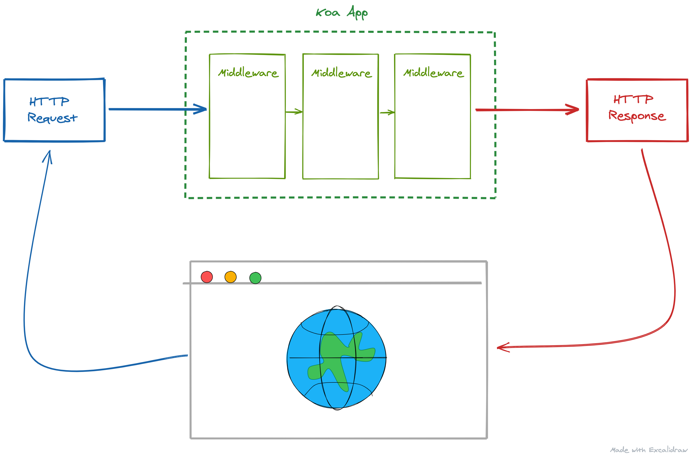
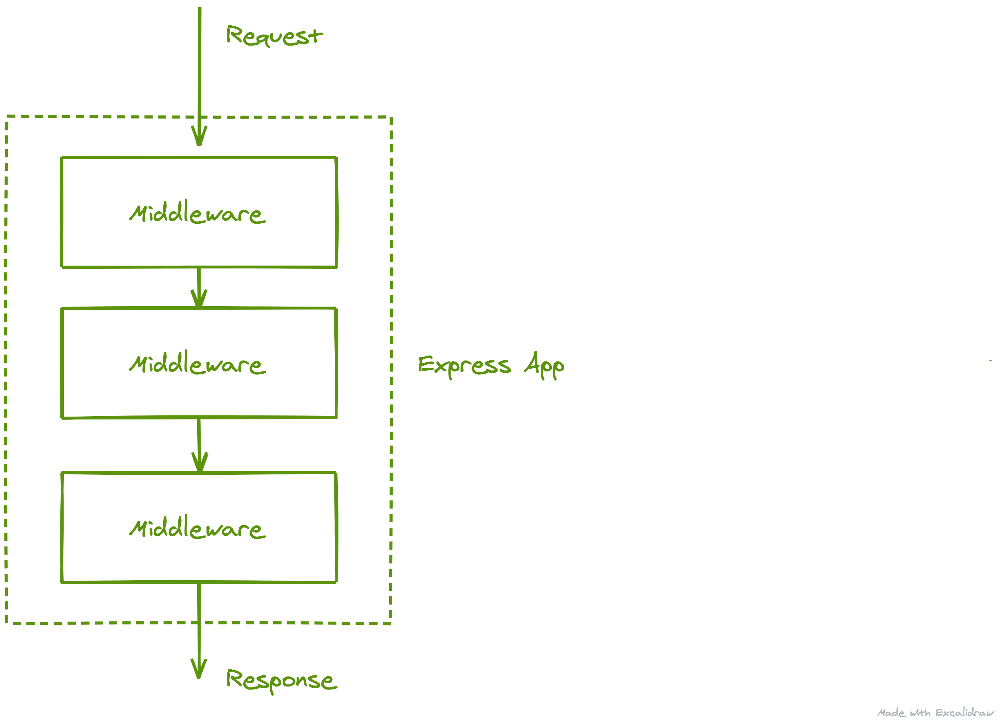
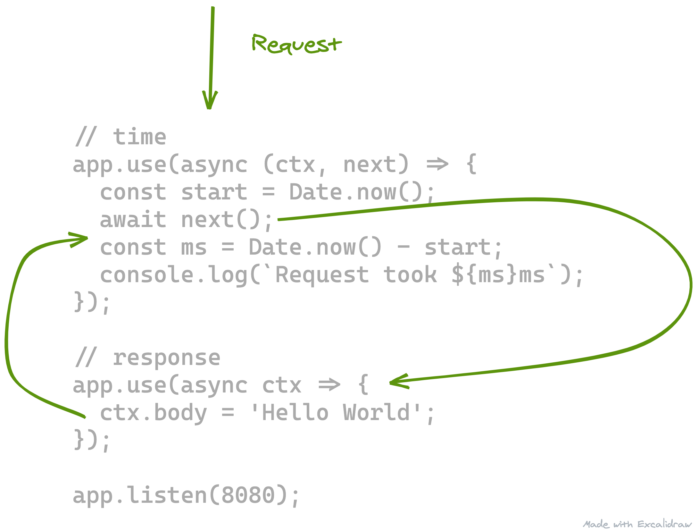

Setup API Server
For our Map project, we need a robust and easy to use API Server. Luckily Koa fits these requirements and is a nice API framework to use.
From the Koa website:
"A Koa application is an object containing an array of middleware functions which are composed and executed in a stack-like manner upon request."
The most basic Koa app with a single middleware, that returns "Hello world" for all requests is:
const Koa = require('koa');
const app = new Koa();
app.use(async ctx => {
ctx.body = 'Hello World';
});
app.listen(3000);
We can visualize the http request flowing through the layers like so:

Other frameworks, like Express.js, will employ a top-down middleware flow similar to this:
This is not quite what Koa does.
Koa uses a cascade technique. Let's update our app to include a middleware function that logs how long each request took. A function would look like this:
// time middleware
app.use(async (ctx, next) => {
// Get current time
const start = Date.now();
// Call next middleware function...
await next();
// Subtract start from new current time
const ms = Date.now() - start;
// Log the duration
console.log(`Request took ${ms}ms`);
});
The request would flow to the time middleware, would then flow to the next middleware which adds "Hello world" to the responses' body, and back to the time middleware:

I encourage you to read the overview on the Koa website to gain some intuition. We will abstract away some of these core ideas by leveraging the Koa Router pakage so no worries! More to come later!